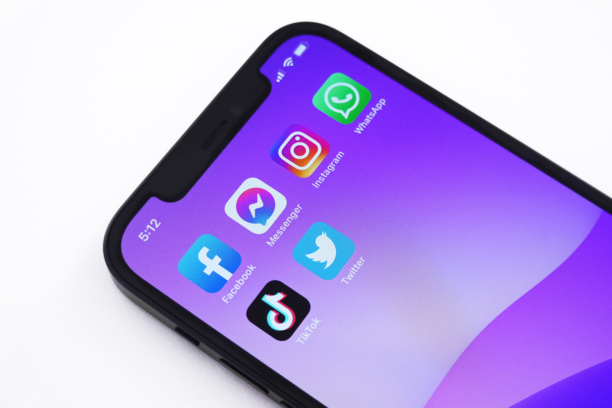

You're the only one who doesn't know what to do at the gym
This blog post. talks about how TikTok has changed the game in terms of working out, and how you can get in on it!

Tips and Experiences on Overcoming Body Image Struggles on Social Media
Here in this podcast me and a few friends talk about body issues we have all experienced due to social media. By the end of the podcast we conclude with ways we suggest ideas for getting over body issues that we have all experienced.

Video
A video of an at home workout thatcan be used to build a base before starting to lift at the gym! This video is great for beginners.

CHICKEN SANDWICH
We've packed a lot into this one - shredded cabbage, carmalized onions, deep-fried chicken, chipotle mayo, half-sour pickles, and a toasted sesame bun will leave you thoroughly satisfied!